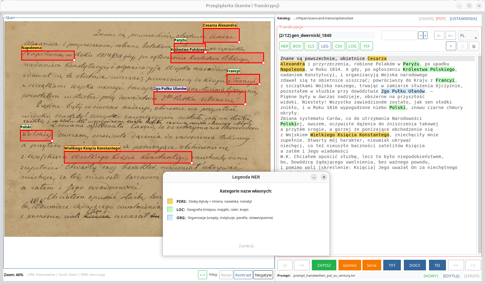
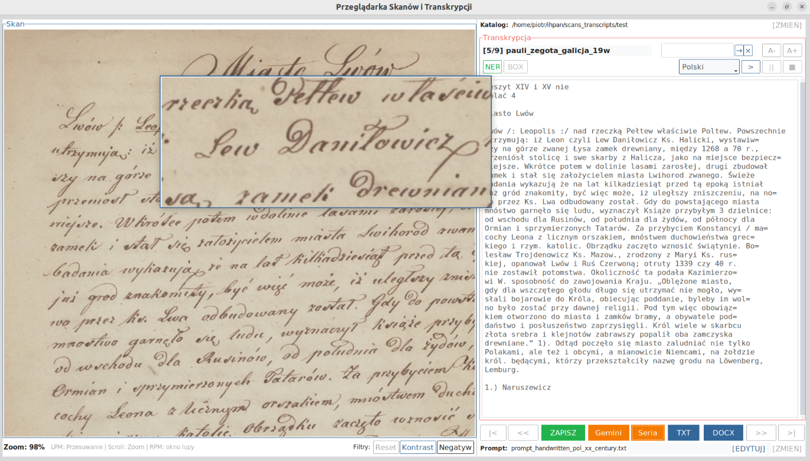
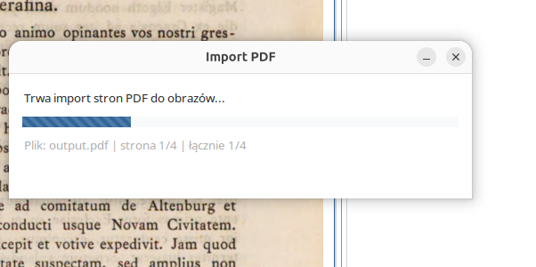
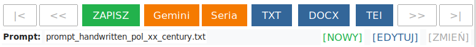
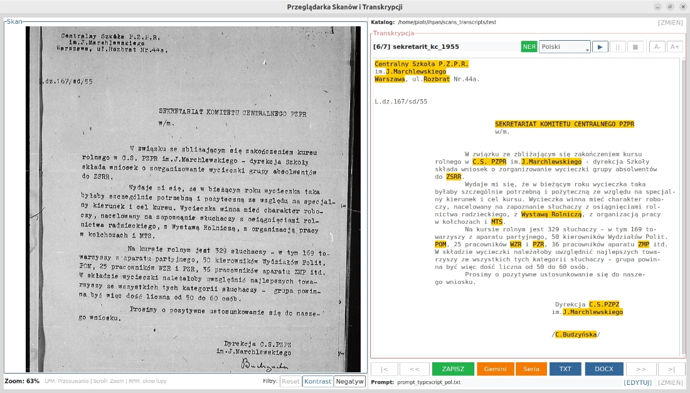
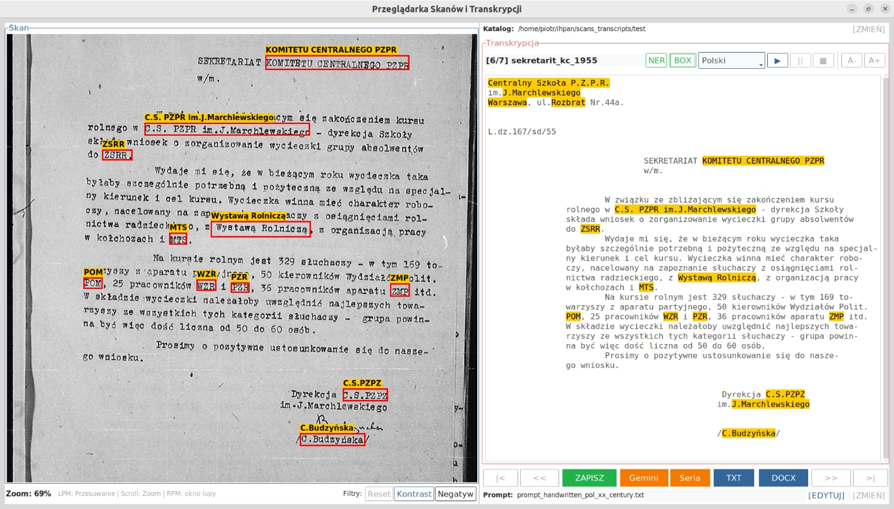
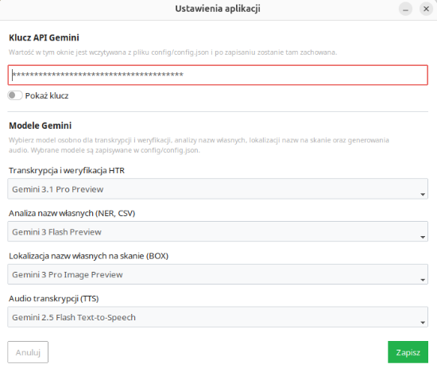
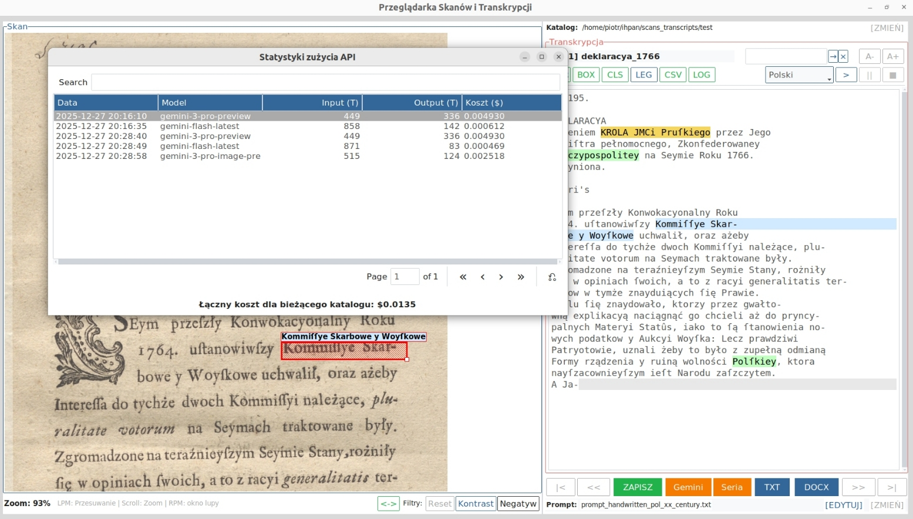

Scans and Transcriptions
Opis działania i instrukcja obsługi aplikacji do przeglądania skanów oraz przygotowywania, weryfikowania i eksportowania transkrypcji z użyciem modeli Gemini.
Scans and Transcriptions to aplikacja desktopowa (Linux/Windows) przeznaczona do pracy ze skanami rękopisów, maszynopisów, starodruków i innych materiałów źródłowych. Program pozwala przygotować automatyczną transkrypcję, a następnie sprawdzać jej poprawność przez równoległą pracę z obrazem dokumentu i tekstem.

Aplikacja działa na wskazanym katalogu roboczym. W jednym miejscu mogą być przechowywane obrazy skanów, pliki tekstowe z transkrypcją, nagrania odczytu oraz pliki pomocnicze z metadanymi. Dzięki temu narzędzie nadaje się zarówno do szybkiego odczytu pojedynczego dokumentu, jak i do stopniowej pracy nad większym zbiorem materiałów.
Najważniejsze funkcje
- przeglądanie skanów i odpowiadających im plików transkrypcji,
- import stron z pliku PDF do katalogu roboczego,
- automatyczna transkrypcja pojedynczego skanu albo całej serii plików,
- zapisywanie wyników do formatów TXT, DOCX oraz TEI-XML,
- weryfikacja transkrypcji przez powiększanie, przesuwanie i filtrowanie obrazu,
- odsłuch tekstu z użyciem syntezy mowy,
- wyróżnianie nazw własnych w tekście oraz zaznaczanie ich na skanie,
- eksport rozpoznanych encji do pliku CSV,
- rejestrowanie kosztów wywołań API dla bieżącego katalogu.
Instrukcja obsługi
Wybór katalogu roboczego
Po uruchomieniu programu należy wskazać folder, w którym znajdują się skany. Jeżeli w katalogu są już pliki
.txt o nazwach zgodnych z nazwami obrazów, aplikacja wczyta je jako istniejące transkrypcje.
Jeżeli takich plików jeszcze nie ma, program utworzy automatycznie puste pliki, które zostaną uzupełnione po uruchomieniu modelu Gemini.
Jeżeli we wskazanym folderze nie ma skanów ale znajduje się tam plik pdf aplikacja zaproponuje wyodrębnienie skanów z pliku pdf (zostaną zapisane jako pliki o nazwach img-01.png itd.)
Import z pliku PDF
Jeżeli materiał źródłowy jest dostępny w postaci pliku PDF, można użyć funkcji importu. Program wyodrębni
kolejne
strony i zapisze je w katalogu roboczym jako osobne pliki graficzne, na przykład img-01.png,
img-02.png i następne. Jest to szczególnie przydatne przy pracy z materiałami pobranymi z
bibliotek cyfrowych.
Automatyczna transkrypcja
Aplikacja może odczytać pojedynczy skan albo całą serię plików. Użytkownik może korzystać z gotowych promptów lub przygotować własne instrukcje dla modelu. Przy odczycie seryjnym program domyślnie zaznacza te pliki, które nie mają jeszcze transkrypcji albo mają plik pusty, ale wybór ten można zmienić ręcznie.
Weryfikacja i poprawianie tekstu
Po wykonaniu odczytu użytkownik może kontrolować wynik, porównując tekst ze skanem. W panelu obrazu dostępne są: przesuwanie, przybliżanie i oddalanie, lupa oraz podstawowe filtry obrazu. W panelu tekstowym można ręcznie poprawiać transkrypcję, wyszukiwać fragmenty tekstu i zmieniać wielkość czcionki.
Eksport wyników
Gotowe transkrypcje można zapisać jako scalony plik tekstowy, dokument DOCX albo plik TEI-XML. Rozpoznane nazwy własne mogą zostać również wyeksportowane do pliku CSV, co ułatwia ich dalsze wykorzystanie badawcze.
Elementy interfejsu
Panel skanu
Lewy panel służy do pracy z obrazem dokumentu. Użytkownik może przesuwać skan myszą, zmieniać skalę widoku, korzystać z lupy oraz używać prostych filtrów, takich jak wzmocnienie kontrastu czy odwrócenie kolorów. Funkcje te są szczególnie przydatne przy rękopisach i słabiej czytelnych reprodukcjach.
Główny pasek narzędzi
Główny pasek umożliwia przechodzenie między plikami, zapisywanie zmian, uruchamianie odczytu pojedynczego skanu lub całej serii oraz eksport wyników do wybranych formatów. W tym miejscu widoczna jest również informacja o aktualnie wybranym pliku promptu.
Pasek transkrypcji
Nad polem tekstowym znajdują się narzędzia pomocnicze: wyszukiwanie w transkrypcji, zmiana wielkości czcionki, przełączanie języka interfejsu oraz przyciski związane z odsłuchem i kontrolą nazw własnych. Aplikacja obsługuje obecnie polską i angielską wersję językową.
Kontrola nazw własnych
W praktyce transkrypcji automatycznej szczególnie często błędy pojawiają się w nazwach osób, miejsc i instytucji. Dlatego aplikacja zawiera osobne funkcje wspomagające weryfikację takich elementów.
- NER wyróżnia nazwy własne w tekście transkrypcji,
- BOX zaznacza je bezpośrednio na skanie,
- CLS usuwa oznaczenia,
- LEG wyświetla legendę kolorów dla kategorii encji,
- CSV eksportuje listę rozpoznanych nazw do pliku.
Funkcja BOX ma charakter eksperymentalny. Ramki wskazujące nazwy można przesuwać i poprawiać ręcznie. Jej celem nie jest pełna automatyzacja kontroli, lecz ułatwienie szybkiego porównania tekstu z obrazem dokumentu.
Odczytywanie transkrypcji i kontrola kosztów
Program umożliwia odczytanie transkrypcji na głos, co może pomagać w wychwytywaniu literówek i usterek redakcyjnych. Ponadto aplikacja zapisuje informacje o użytych modelach, liczbie tokenów i kosztach wywołań API dla bieżącego katalogu.
Przykładowe ekrany aplikacji







Wskazówki dla użytkownika
- "projektem" dla aplikacji jest po prostu folder ze skanami, dlatego należy pracować w osobnych folderach dla każdego zespołu skanów,
- po automatycznym odczycie należy zawsze przeprowadzić ręczną kontrolę tekstu,
- szczególną uwagę warto zwracać na nazwy własne, daty i liczby,
- lupa i filtry obrazu są szczególnie użyteczne przy rękopisach oraz skanach niskiej jakości,
- eksport do TEI-XML może stanowić wygodny punkt wyjścia do dalszego opracowania materiału źródłowego.
Dostęp do projektu
Repozytorium projektu: GitHub – scans-and-transcriptions
Wydanie 0.1 dla systemu Windows: GitHub Releases – v0.1 Pod linkiem powyżej znajduje się paczka zip z folderem zawierającym aplikację. Uwaga: ze wględu na restrykcje i zabezpieczenia w nowych wersjach systemu Windows konieczne może być wyłączenie katalogu z aplikacją, by ją poprawnie uruchomić.